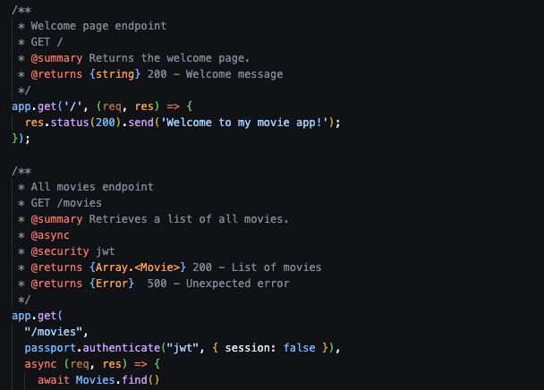
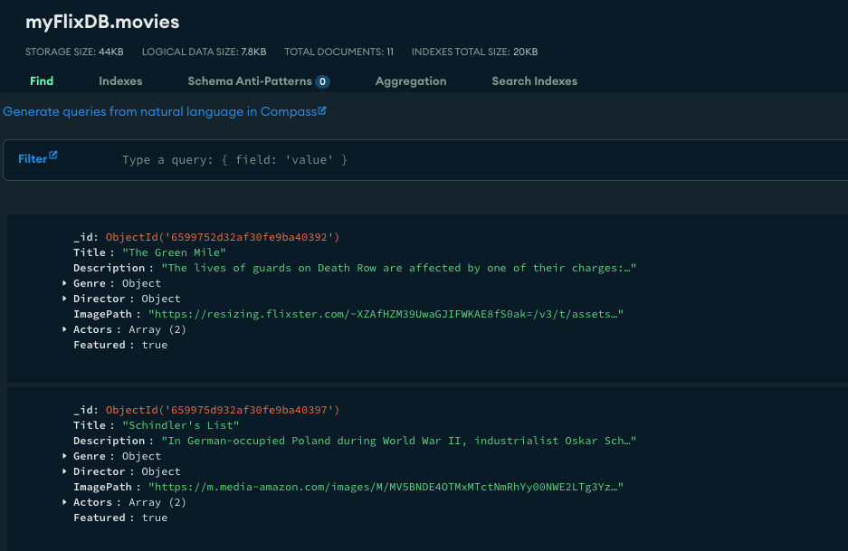

myFlix API
Github LinkThe Goal:
To build a server-side component for a “movies” web application. Giving me experience building a database, layers of business logic, and REST API. This project will be the base that I will connect two frontend projects, a completed MERN tech stack with a React movies application, and an Angular movies application.
The Purpose:
Career Foundry, Full-Stack Immersion, Achievement 2
This project will demonstrate my mastery of full-stack JavaScript development, including APIs, web server frameworks, databases, business logic, authentication, and data security.
The Tools:
- Javascript
- Node.js
- Express
- MongoDB
- Mongoose
The Process:
This process began with building our HTTP request endpoints. I learned how these endpoints would be the way that our frontend would connect to the database. Which then allowed us to focus on learning about databases. We focused on a nonSQL database and used MongoDB to start making the structure. I didn’t know it at the time but this is when I would make a choice that would effect me for the rest of the process. Organizing the data we were creating and choosing the layout of that structure I did not make clear choices about capitalization of key-value pairs. This is a lesson I have paid for and learned as I struggled through connecting my frontend applications to this backend component.
Applying business logic to our backend Allowed me to take some control of my mistake as we applied models for our data formalizing the data structure and how it was being implemented. As I built my documentation I also tried to be more clear about when the keys were capitalized and when they were not. This was not a big problem but I was surprised by how often I had to go back and fix something from such a small choice.
We deployed our project to Heroku, I had trouble understand the directions we were given for deployment and was struggling to deploy successfully. I ended up connecting with a friend who is a developer and we worked on it together and found a work around to deploy manually instead of automatically. This was my first time co-working with a developer on something and made me excited to work with a team.
The Outcome:
I successfully built my REST API and linked it with my React application and later an Angular application. I learned how documentation of an API is so important. Returning to my documentation was essential for me as shifted my mindset to the client side of this application. I overall enjoyed working on the backend of a project and I hope to continue this kind of work with something new.